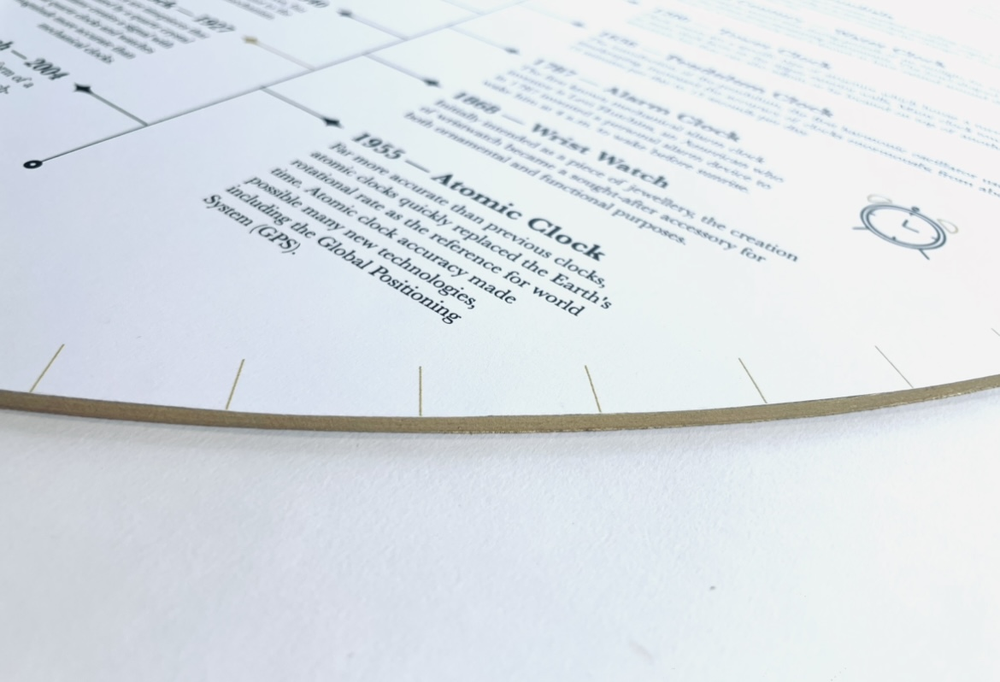

Clock Diagram
From time travel to astrology, clocks can lead to all sorts of interesting subjects. I went in depth in exploring the different subjects stemming from a modern, analog clock. Through my exploration, I’ve learned about different topics such as spacetime, crystals, and one of the most famous clocks- big ben.